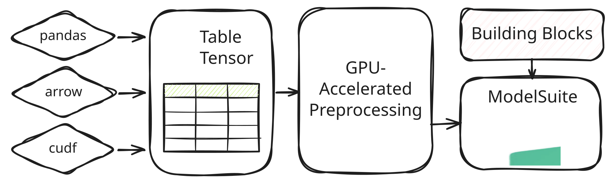
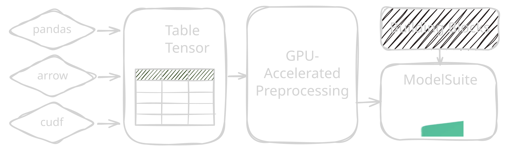
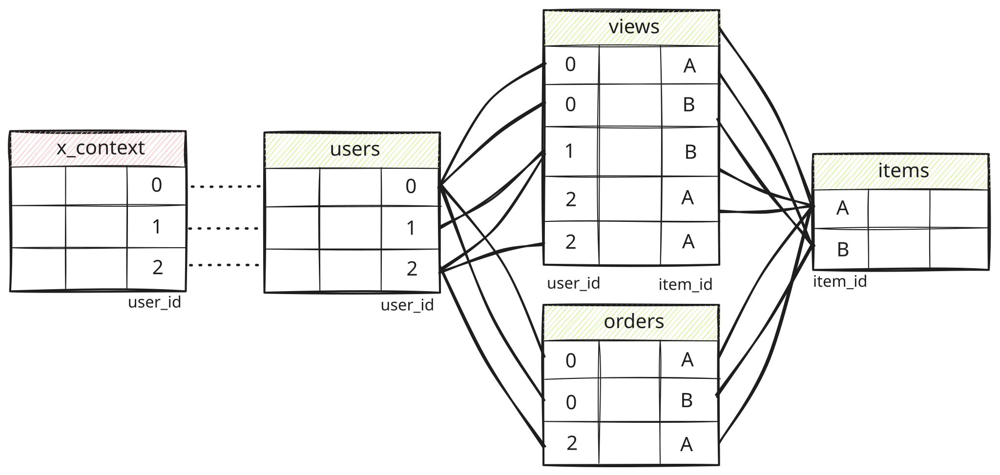
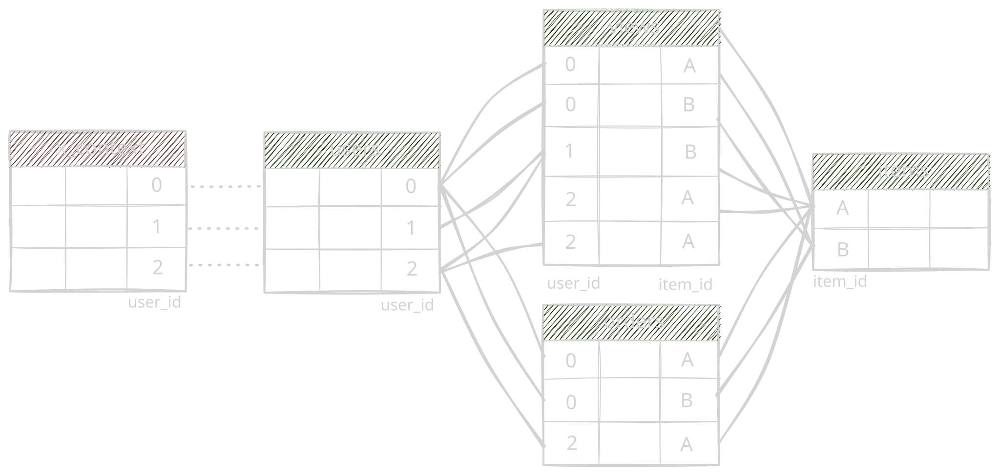

In-Context Learning#
In-Context Learning (ICL) treats predictions on structured data (e.g., tabular, relational, time series) as an inference-time task: a model receives labeled context rows together with unlabeled query rows, and predicts the query targets without updating its weights.
The structured-data-models package groups and unifies such foundation models behind a single interface:
Convert dataframe-like data into a
TableTensor(see here for the accompanying tutorial).Optionally define pre- and post-processing routines through a
Recipe(see here for the accompanying tutorial).Instantiate and run an in-context model from
sdm.models.Receive predictions as a
TableTensor.
{kind=link}

{kind=link}

The ICL Interface#
An In-Context Learning task is described by context features, context targets, and query features, while model-specific details are handled by the model implementation and its pre- and post-processing Recipe.
As a result, single-table and multi-table models can share the same prediction workflow while consuming different forms of context.
Specifically, an in-context learning task has three core inputs, as defined in the ICLModel base class:
x_context(TableTensor|torch.Tensor): feature rows with observed targets.y_context(TableTensor|torch.Tensor): the target column for those context rows.x_query(TableTensor|torch.Tensor): feature rows whose targets should be predicted.
The context rows are not used to update model weights. They are examples supplied at inference time, and the model predicts query rows by attending to that labeled context:
from sklearn.datasets import load_breast_cancer
import sdm
df = load_breast_cancer(as_frame=True).frame
table = sdm.TableTensor.from_pandas(
df=df,
stypes=sdm.infer_stypes(df, overrides={"target": "categorical"}),
device="cuda",
)
model = sdm.models.TabICLv2(device="cuda")
out = model(
x_context=table[:300].drop_columns("target"),
y_context=table[:300, "target"],
x_query=table[300:].drop_columns("target"),
)
This one-shot forward() call is the most direct form of the interface. Calling forward() while the model is in train mode (model.train()) enables gradient tracking so the returned predictions can be used in an ordinary training loop (loss.backward()) to fine-tune the model’s parameters.
When the same context is reused for many query batches, call fit() once and then call predict() for each query batch.
This records reusable model state, including key/value projections, and avoids recomputing the context side of the model for every prediction:
model.fit(
x=table[:300].drop_columns("target"),
y=table[:300, "target"],
)
for batch in table[300:].drop_columns("target").split(batch_size):
out = model.predict(batch)
model.clear()
The cached interface has the same prediction contract as the one-shot call.
Use one-shot forward() calls for one-time calls when tasks change frequently, and use the fit()+predict() flow for large batch predictions over a single fixed task.
Unlike forward(), predict() does not support gradient-based fine-tuning and raises if the model is in train mode.
Model Concepts#
Structured data foundation models are not bound to a specific task type.
The same ICLModel instance can, e.g., consume both classification and regression targets, depending on the input data it receives.
The supported_target_stypes attribute of an ICLModel denotes which target semantic types the model accepts.
For example, a categorical target is treated as classification, while a numerical target is treated as regression.
Similarly, there are no task-specific constructor arguments when creating an ICLModel.
Instead, task behavior is determined at the data boundary.
A single Recipe can express task-specific pre- and post-processing through StypeDispatch and TaskDispatch.
While each model provides a default recipe, users can fully control or modify how inputs and outputs are processed (see here for more information).
Lastly, the supported_feature_stypes attribute denotes which feature semantic types a model accepts after pre-processing.
Semantic types outside this set need to be converted, dropped, or otherwise handled by the recipe before they reach the model.
For example, TabICLv2 can only consume numerical features internally, so it is the recipe’s job to convert any other semantic type into a numerical representation before it reaches the model, e.g., via ToNumerical on categorical columns.
Predictions are returned as a general TableTensor, where the output schema depends on the task, model, and post-processing routine of the Recipe:
Classification predictions are generally returned as numerical probabilities, where each target category corresponds to one column in the output.
Regression predictions are generally model-dependent. For example,
TabICLv2outputs numerical quantiles named"q001"through"q999", from which the (approximate) mean prediction can be derived viaout.numerical.mean(dim=-1)and the median prediction is available viaout["q500"].numerical.
Since predictions are returned as TableTensor, you can zero-copy them to pandas, arrow, or cudf via to_pandas(), to_arrow(), and to_cudf() for further downstream processing.
In order to simplify metric calculation (e.g., via torchmetrics), we provide helper functions in the sdm.evaluation package to convert target columns to class indices and align prediction columns to them (see to_class_indices() and to_binary_class()).
Ensembling#
The interface of an ICLModel additionally supports estimator ensembling through the num_estimators argument in forward() and fit().
When a recipe contains stochastic processors, such as ShuffleColumns, pre-processing produces different transformed views of the same task, and model outputs on these views are stacked for post-processing.
Beyond stochastic processors, ensembling can also provide distinct in-context examples per estimator. By default, the leading dimension of higher-rank inputs is interpreted as the estimator dimension, which allows callers to customize the data seen by each estimator (e.g., to scale to larger datasets):
num_estimators = 4
rows_per_estimator = 1_000
row_index = torch.randperm(x.size(0), device=x.device)
row_index = row_index[:num_estimators * rows_per_estimator]
row_index = row_index.view(num_estimators, rows_per_estimator)
model(
x_context=x_context[row_index],
y_context=y_context[row_index],
x_query=x_query.expand(num_estimators, *x_query.size()),
num_estimators=None,
)
Autocasting#
An ICLModel does not enable mixed-precision autocasting by default.
Instead, the model respects the caller’s active PyTorch autocast context.
For example, to run the model forward pass in torch.float16 mixed precision on CUDA with torch.amp.autocast():
with torch.amp.autocast("cuda", dtype=torch.float16):
out = model(...)
Pre-processing and post-processing routines remain outside the model’s autocast policy. They will run with the dtypes of the model inputs.
Embeddings#
Intermediate embeddings of a ICLModel can be captured by attaching a standard PyTorch hook at any child module, e.g., via torch.nn.Module.register_forward_pre_hook().
For example, the following snippet records the query embeddings passed into the TabICLv2 classification head:
def _embedding(_module: torch.nn.Module, args: tuple[Tensor, ...]) -> None:
query_embedding = args[0]
model = sdm.models.TabICLv2()
head = model.models["classification"].icl_block.head
handle = head.register_forward_pre_hook(_embedding)
Such embeddings can be used for downstream analysis, such as clustering, retrieval, or similarity search.
Relational Context#
So far, we have described the single-table in-context learning paradigm.
A key design point of the structured-data-models package is that the same interface extends to relational prediction via the concept of RelatedTables.
A RelatedTables object provides additional relational context: a set of tables, relationships among those tables, and task links that act as entry points from rows in x_context and x_query into the related tables.
This gives foundation models extra context without changing the core ICL structure.
For example, a row in x_context or x_query might ask for a prediction about one entity at a particular time, such as whether a user will churn next month.
Through RelatedTables, that row can be linked to the corresponding user record, that user’s past behavior, and any other records connected through the relational schema.
The model can use this relational neighborhood as context for the prediction task, without requiring manual flattening of related information into one single wide table.
{kind=link}

{kind=link}

Specifically, RelatedTables consist of three components:
tables: mapping from table names toTableTensorobjects containing the tabular data of related tables.relationships: ([Relationship]): join relationships among the related tables. Supports single columns or composite keys.task_links([TaskLink]): entry points from rows inx_contextandx_queryinto the related tables. Supports single columns or composite keys.
A Relationship is defined by columns marked as id semantic type.
An id column can represent a primary key, a foreign key, or another identifier used to match rows.
Importantly, id columns are used only to establish relationships among tables and are not used as input features during model processing:
import sdm
x_context = sdm.TableTensor.from_columns(
{"user_id": [0, 1, 2, 3]},
stypes={"user_id": "id"},
device="cuda",
)
related_context_tables = sdm.RelatedTables(
tables={
"users": sdm.TableTensor.from_columns(
{"user_id": [0, 1, 2, 3], "age": [42, 23, 31, 26]},
stypes={"user_id": "id", "age": "numerical"},
device="cuda",
),
"orders": sdm.TableTensor.from_columns(
{"user_id": [0, 0, 1, 3, 3, 3], "amount": [9.99, 4.99, ...]},
stypes={"user_id": "id", "amount": "numerical"},
device="cuda",
),
},
relationships=[{
"left_table": "orders",
"left_columns": "user_id",
"right_table": "users",
"right_columns": "user_id",
}],
task_links=[{
"task_columns": "user_id",
"table": "users",
"table_columns": "user_id",
}],
)
In some tasks, each row in x_context or x_query should receive its own disjoint relational context.
For example, two prediction rows may refer to the same user but different prediction times.
As such, each row should only be linked to the related records available at its prediction time, preventing temporal leakage.
RelatedTables support this by allowing Relationship and TaskLink objects to be defined with composite keys.
For this, we add a primary-key column to x_context and x_query, and add the same value as a foreign key to every row in the RelatedTables that belongs to that specific example.
This makes it possible to represent disjoint relational neighborhoods for different rows in x_context and x_query even when they refer to the same entity or share parts of the same local neighborhood.
sdm.RelatedTables(
tables=...,
relationships=[{
"left_table": "orders",
"left_columns": ("task_id", "user_id"),
"right_table": "users",
"right_columns": ("task_id", "user_id"),
}, ...],
task_links=[{
"task_columns": ("task_id", "user_id"),
"table": "users",
"table_columns": ("task_id", "user_id"),
}],
)
RelatedTables are then passed through the same ICL interface of the ICLModel:
# Default in-context learning forward pass:
out = model(
x_context=x_context,
y_context=y_context,
x_query=x_query,
related_context_tables=related_context_tables,
related_query_tables=related_query_tables,
)
# Fit+Predict forward pass:
model.fit(x_context, y_context, related_context_tables)
out = model.predict(x_query, related_query_tables)
The supports_related_tables attribute denotes whether an ICLModel supports relational context.
For example, KumoRelational consumes the x_context and x_query together with related tables, propagates information through its induced relational subgraph, and then predicts the query rows from the labeled context rows.
To simplify the construction of RelatedTables, we provide heterogeneous, temporally aware subgraph samplers with CPU and CUDA backends, based on pyg-lib and cugraph, respectively.
Given rows from x_context or x_query, a sampler returns the reachable subset of related table rows up to a user-specified number of hops and neighbors.
The full relational sampling and prediction flow is shown in examples/kumo/relational/rel_bench.py.